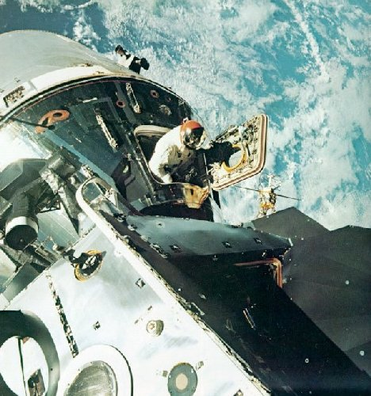

|  |
| Gleaming in the sunlight, Spider and Gumdrop are hard-docked while two of the three-man crew venture outside. CM pilot Dave Scott, breathing through an umbilical connection, pokes his head out the command-module hatch. The picture was taken by LM pilot Rusty Schweickart (who wore an independent life-support pack) while perched on the lunar module's "front porch". |